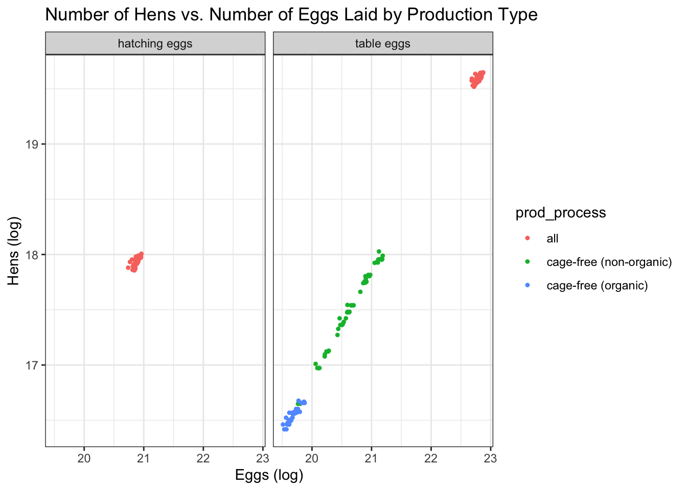
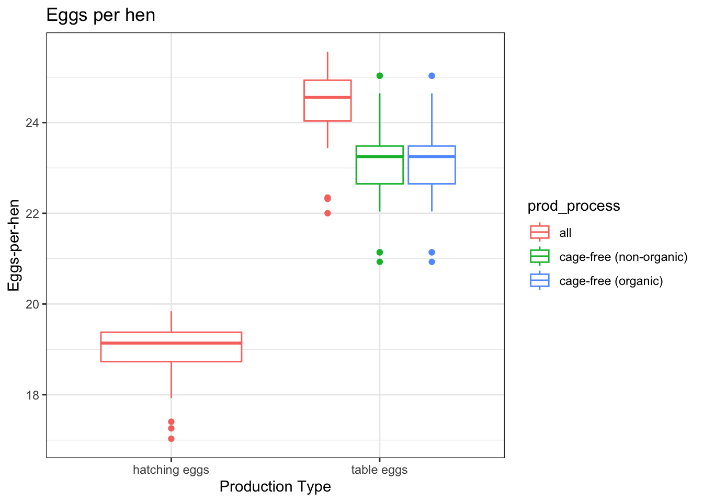
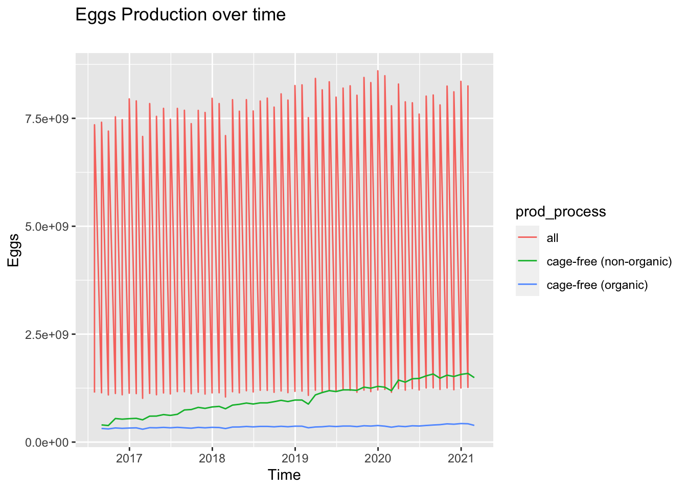
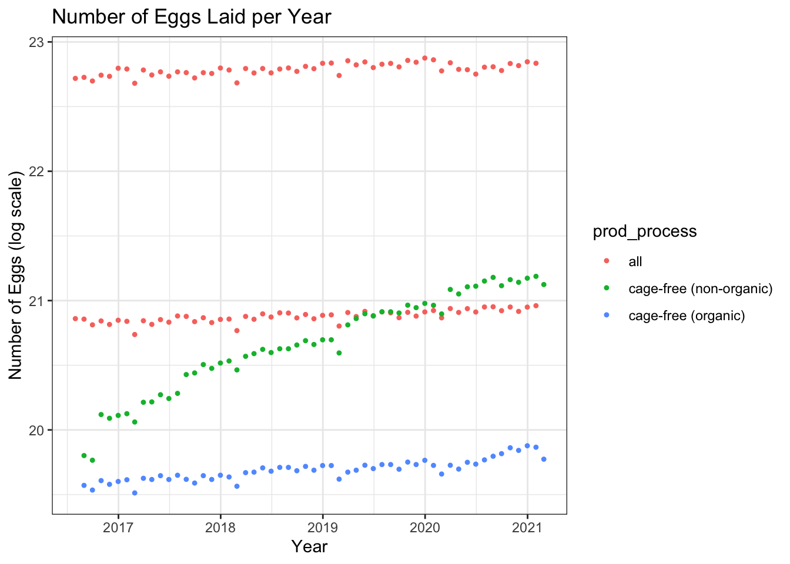
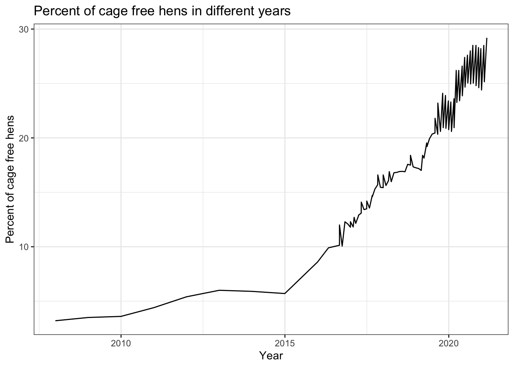
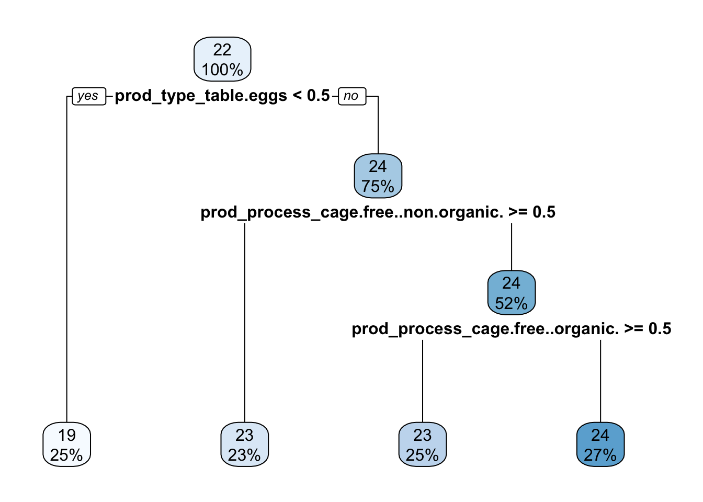
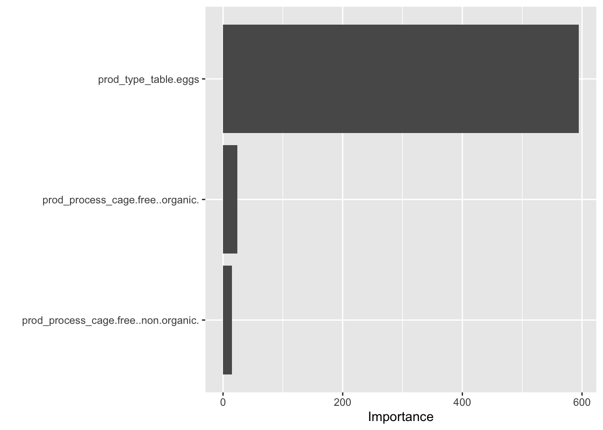

Loading required package: timechange
Attaching package: 'lubridate'
The following objects are masked from 'package:base':
date, intersect, setdiff, union
Attaching package: 'rpart'
The following object is masked from 'package:dials':
prune
library(glmnet)
Loading required package: Matrix
Attaching package: 'Matrix'
The following objects are masked from 'package:tidyr':
expand, pack, unpack
Loaded glmnet 4.1-7
library(rpart.plot)library(vip)
Attaching package: 'vip'
The following object is masked from 'package:utils':
vi
Load data
data = tidytuesdayR::tt_load('2023-04-11')
--- Compiling #TidyTuesday Information for 2023-04-11 ----
--- There are 2 files available ---
--- Starting Download ---
Downloading file 1 of 2: `egg-production.csv`
Downloading file 2 of 2: `cage-free-percentages.csv`
--- Download complete ---
summary(data)
Length Class Mode
egg-production 6 spec_tbl_df list
cage-free-percentages 4 spec_tbl_df list
Wrangle the data
#format into dataframeseggData = data[["egg-production"]][, 1:5] #save without the source as it is not importantcagefreeData = data[["cage-free-percentages"]][, 1:3] #save without the source as it is not important
#add a column for the ratio of eggs to hens to the egg dataframeeggData =transform( eggData, egg_to_hen= n_eggs/n_hens)
skim(eggData)
Data summary
Name
eggData
Number of rows
220
Number of columns
6
_______________________
Column type frequency:
character
2
Date
1
numeric
3
________________________
Group variables
None
Variable type: character
skim_variable
n_missing
complete_rate
min
max
empty
n_unique
whitespace
prod_type
0
1
10
13
0
2
0
prod_process
0
1
3
23
0
3
0
Variable type: Date
skim_variable
n_missing
complete_rate
min
max
median
n_unique
observed_month
0
1
2016-07-31
2021-02-28
2018-11-15
56
Variable type: numeric
skim_variable
n_missing
complete_rate
mean
sd
p0
p25
p50
p75
p100
hist
n_hens
0
1
1.108399e+08
1.241212e+08
13500000.00
1.72845e+07
5.99395e+07
1.255392e+08
3.41166e+08
▇▁▁▁▂
n_eggs
0
1
2.606668e+09
3.082458e+09
298074240.00
4.23962e+08
1.15455e+09
2.963011e+09
8.60100e+09
▇▁▁▁▂
egg_to_hen
0
1
2.243000e+01
2.190000e+00
17.03
2.06600e+01
2.32500e+01
2.403000e+01
2.55600e+01
▁▃▁▇▅
skim(cagefreeData)
Data summary
Name
cagefreeData
Number of rows
96
Number of columns
3
_______________________
Column type frequency:
Date
1
numeric
2
________________________
Group variables
None
Variable type: Date
skim_variable
n_missing
complete_rate
min
max
median
n_unique
observed_month
0
1
2007-12-31
2021-02-28
2018-11-15
91
Variable type: numeric
skim_variable
n_missing
complete_rate
mean
sd
p0
p25
p50
p75
p100
hist
percent_hens
0
1.00
17.95
6.58
3.20
13.46
17.30
23.46
29.20
▂▅▇▆▆
percent_eggs
42
0.56
17.10
4.29
9.56
14.52
16.23
19.46
24.55
▆▇▇▆▇
###Explore Egg Data
#table of the egg datatibble(eggData)
# A tibble: 220 × 6
observed_month prod_type prod_process n_hens n_eggs egg_to_hen
<date> <chr> <chr> <dbl> <dbl> <dbl>
1 2016-07-31 hatching eggs all 57975000 1147000000 19.8
2 2016-08-31 hatching eggs all 57595000 1142700000 19.8
3 2016-09-30 hatching eggs all 57161000 1093300000 19.1
4 2016-10-31 hatching eggs all 56857000 1126700000 19.8
5 2016-11-30 hatching eggs all 57116000 1096600000 19.2
6 2016-12-31 hatching eggs all 57750000 1132900000 19.6
7 2017-01-31 hatching eggs all 57991000 1123400000 19.4
8 2017-02-28 hatching eggs all 58286000 1014500000 17.4
9 2017-03-31 hatching eggs all 58735000 1128500000 19.2
10 2017-04-30 hatching eggs all 59072000 1097200000 18.6
# … with 210 more rows
Egg Production Data Dictionary
Variable
Class
Description
observed_month
double
Month in which report observations are collected,Dates are recorded in ISO 8601 format YYYY-MM-DD
prod_type
character
type of egg product: hatching, table eggs
prod_process
character
type of production process and housing: cage-free (organic), cage-free (non-organic), all. The value ‘all’ includes cage-free and conventional housing.
n_hens
double
number of hens produced by hens for a given month-type-process combo
n_eggs
double
number of eggs producing eggs for a given month-type-process combo
Plot the data to explore
#Plot the data # Relationship between the number of eggs laid and the number of hens ggplot() +geom_point(data = eggData, aes(x =log(n_eggs), y =log(n_hens), color = prod_process), shape =20) +theme_bw()+ggtitle("Number of Hens vs. Number of Eggs Laid") +labs(x ="Eggs (log)", y ="Hens (log)")
#Plot the relationship between the number of eggs laid and the number of hens grouped by the production typeggplot() +geom_point(data = eggData, aes(x =log(n_eggs), y =log(n_hens), color = prod_process), shape =20) +theme_bw()+ggtitle("Number of Hens vs. Number of Eggs Laid by Production Type") +labs(x ="Eggs (log)", y ="Hens (log)")+facet_wrap(.~prod_type)

# Plot the number of eggs-per-hen separated my the production process and typeggplot(eggData, aes(x = prod_type, y = egg_to_hen)) +geom_boxplot(aes(color = prod_process)) +theme_bw() +labs(x ="Production Type", y ="Eggs-per-hen", title ="Eggs per hen ")

Plot the number of eggs hatched by year
#Separate by the product type ggplot()+geom_point(aes(x=observed_month, y=log(n_eggs), group=prod_process, color=prod_process), data=eggData,shape =20)+theme_bw()+ggtitle("Number of Eggs Laid per Year") +labs(x ="Year", y ="Eggs (log scale)")+facet_wrap(.~prod_type)

Plot the number of eggs hatched by year
#No separation ggplot()+geom_point(aes(x=observed_month, y=log(n_eggs), group=prod_process, color=prod_process), data=eggData,shape =20)+theme_bw()+ggtitle("Number of Eggs Laid per Year") +labs(x ="Year", y ="Number of Eggs (log scale)")

Based on the explorations, we can see there is a vast difference between the number of eggs produced for table eggs and hatching eggs. The number of eggs to hens is fairly consistent for the table eggs but the hatching eggs have a lower egg-to-hen ratio.
Explore the Cage Free Data
#table of the cage free datatibble(cagefreeData)
# A tibble: 96 × 3
observed_month percent_hens percent_eggs
<date> <dbl> <dbl>
1 2007-12-31 3.2 NA
2 2008-12-31 3.5 NA
3 2009-12-31 3.6 NA
4 2010-12-31 4.4 NA
5 2011-12-31 5.4 NA
6 2012-12-31 6 NA
7 2013-12-31 5.9 NA
8 2014-12-31 5.7 NA
9 2015-12-31 8.6 NA
10 2016-04-30 9.9 NA
# … with 86 more rows
Cage-Free Eggs Data Dictionary
Variable
Class
Description
observed_month
double
Month in which report observations are collected,Dates are recorded in ISO 8601 format YYYY-MM-DD
percent_hens
double
observed or computed percentage of cage-free hens relative to all table-egg-laying hens
percent_eggs
double
computed percentage of cage-free eggs relative to all table eggs,This variable is not available for data sourced from the Egg Markets Overview report
# plot the percent of cage free eggs overtimeggplot(cagefreeData, aes(x = observed_month, y = percent_eggs)) +geom_point() +geom_line() +theme_bw() +scale_x_date(limit=c(as.Date("2016-01-01"),as.Date("2022-01-01")))+labs(x ="Year", y ="Percent of cage free eggs", title ="Percent of cage free eggs in different years")
# plot the percent of cage free hens overtimeggplot(cagefreeData, aes(x = observed_month, y = percent_hens)) +geom_line() +theme_bw() +labs(x ="Year", y ="Percent of cage free hens", title ="Percent of cage free hens in different years")

After exploration of the cage free data, I have decided to focus on the egg-production dataset for further modeling.
2 Question/Hypothesis
Can production process or production type be a predictor of egg-to-hen ratio? Outcome: egg/hen ratio Predictor: Production process and production type ## 3 Preprocess, Clean, Split
Preprocess
#New dataframe only with data of interesteggs_model_data = eggData %>%mutate_if(sapply(eggData, is.character), as.factor)%>%#change character to factor for modelingselect(prod_type, prod_process, egg_to_hen) #select only the features of interestglimpse(eggs_model_data) #check the data type
Rows: 220
Columns: 3
$ prod_type <fct> hatching eggs, hatching eggs, hatching eggs, hatching egg…
$ prod_process <fct> all, all, all, all, all, all, all, all, all, all, all, al…
$ egg_to_hen <dbl> 19.78439, 19.84026, 19.12668, 19.81638, 19.19952, 19.6173…
# 3 fold cross-validation repeated 3 times #CV on training datacv_data_train =vfold_cv(data_train, v =3, repeats =3)#CV on test datacv_data_test =vfold_cv(data_test, v =3, repeats =3)# Creating a recipe with eggs to hen as the predictor against both outcomesdata_recipe1 =recipe(egg_to_hen~ ., data = data_train)%>%step_dummy(all_nominal(), -all_outcomes())
Null Model
#create null modelnullmodel =null_model() %>%set_engine("parsnip") %>%set_mode("regression")#create null training model recipenullr_train =recipe(egg_to_hen ~1, data = data_train)#workflownullw_train =workflow() %>%add_model(nullmodel) %>%add_recipe(nullr_train)#fitnullf_train =fit_resamples(nullw_train, resamples = cv_data_train)
! Fold1, Repeat1: internal:
There was 1 warning in `dplyr::summarise()`.
ℹ In argument: `.estimate = metric_fn(truth = egg_to_hen, estimate = ....
na_rm = na_rm)`.
Caused by warning:
! A correlation computation is required, but `estimate` is constant an...
! Fold2, Repeat1: internal:
There was 1 warning in `dplyr::summarise()`.
ℹ In argument: `.estimate = metric_fn(truth = egg_to_hen, estimate = ....
na_rm = na_rm)`.
Caused by warning:
! A correlation computation is required, but `estimate` is constant an...
! Fold3, Repeat1: internal:
There was 1 warning in `dplyr::summarise()`.
ℹ In argument: `.estimate = metric_fn(truth = egg_to_hen, estimate = ....
na_rm = na_rm)`.
Caused by warning:
! A correlation computation is required, but `estimate` is constant an...
! Fold1, Repeat2: internal:
There was 1 warning in `dplyr::summarise()`.
ℹ In argument: `.estimate = metric_fn(truth = egg_to_hen, estimate = ....
na_rm = na_rm)`.
Caused by warning:
! A correlation computation is required, but `estimate` is constant an...
! Fold2, Repeat2: internal:
There was 1 warning in `dplyr::summarise()`.
ℹ In argument: `.estimate = metric_fn(truth = egg_to_hen, estimate = ....
na_rm = na_rm)`.
Caused by warning:
! A correlation computation is required, but `estimate` is constant an...
! Fold3, Repeat2: internal:
There was 1 warning in `dplyr::summarise()`.
ℹ In argument: `.estimate = metric_fn(truth = egg_to_hen, estimate = ....
na_rm = na_rm)`.
Caused by warning:
! A correlation computation is required, but `estimate` is constant an...
! Fold1, Repeat3: internal:
There was 1 warning in `dplyr::summarise()`.
ℹ In argument: `.estimate = metric_fn(truth = egg_to_hen, estimate = ....
na_rm = na_rm)`.
Caused by warning:
! A correlation computation is required, but `estimate` is constant an...
! Fold2, Repeat3: internal:
There was 1 warning in `dplyr::summarise()`.
ℹ In argument: `.estimate = metric_fn(truth = egg_to_hen, estimate = ....
na_rm = na_rm)`.
Caused by warning:
! A correlation computation is required, but `estimate` is constant an...
! Fold3, Repeat3: internal:
There was 1 warning in `dplyr::summarise()`.
ℹ In argument: `.estimate = metric_fn(truth = egg_to_hen, estimate = ....
na_rm = na_rm)`.
Caused by warning:
! A correlation computation is required, but `estimate` is constant an...
null model recipe with testing data
#create null training model recipenullr_test =recipe(egg_to_hen ~1, data = data_test)#workflownullw_test =workflow() %>%add_model(nullmodel) %>%add_recipe(nullr_test)#fitnullf_test =fit_resamples(nullw_test, resamples = cv_data_test)
! Fold1, Repeat1: internal:
There was 1 warning in `dplyr::summarise()`.
ℹ In argument: `.estimate = metric_fn(truth = egg_to_hen, estimate = ....
na_rm = na_rm)`.
Caused by warning:
! A correlation computation is required, but `estimate` is constant an...
! Fold2, Repeat1: internal:
There was 1 warning in `dplyr::summarise()`.
ℹ In argument: `.estimate = metric_fn(truth = egg_to_hen, estimate = ....
na_rm = na_rm)`.
Caused by warning:
! A correlation computation is required, but `estimate` is constant an...
! Fold3, Repeat1: internal:
There was 1 warning in `dplyr::summarise()`.
ℹ In argument: `.estimate = metric_fn(truth = egg_to_hen, estimate = ....
na_rm = na_rm)`.
Caused by warning:
! A correlation computation is required, but `estimate` is constant an...
! Fold1, Repeat2: internal:
There was 1 warning in `dplyr::summarise()`.
ℹ In argument: `.estimate = metric_fn(truth = egg_to_hen, estimate = ....
na_rm = na_rm)`.
Caused by warning:
! A correlation computation is required, but `estimate` is constant an...
! Fold2, Repeat2: internal:
There was 1 warning in `dplyr::summarise()`.
ℹ In argument: `.estimate = metric_fn(truth = egg_to_hen, estimate = ....
na_rm = na_rm)`.
Caused by warning:
! A correlation computation is required, but `estimate` is constant an...
! Fold3, Repeat2: internal:
There was 1 warning in `dplyr::summarise()`.
ℹ In argument: `.estimate = metric_fn(truth = egg_to_hen, estimate = ....
na_rm = na_rm)`.
Caused by warning:
! A correlation computation is required, but `estimate` is constant an...
! Fold1, Repeat3: internal:
There was 1 warning in `dplyr::summarise()`.
ℹ In argument: `.estimate = metric_fn(truth = egg_to_hen, estimate = ....
na_rm = na_rm)`.
Caused by warning:
! A correlation computation is required, but `estimate` is constant an...
! Fold2, Repeat3: internal:
There was 1 warning in `dplyr::summarise()`.
ℹ In argument: `.estimate = metric_fn(truth = egg_to_hen, estimate = ....
na_rm = na_rm)`.
Caused by warning:
! A correlation computation is required, but `estimate` is constant an...
! Fold3, Repeat3: internal:
There was 1 warning in `dplyr::summarise()`.
ℹ In argument: `.estimate = metric_fn(truth = egg_to_hen, estimate = ....
na_rm = na_rm)`.
Caused by warning:
! A correlation computation is required, but `estimate` is constant an...
Metrics
#RMSE and RSQ for training setnullf_train %>%collect_metrics()
# A tibble: 2 × 6
.metric .estimator mean n std_err .config
<chr> <chr> <dbl> <int> <dbl> <chr>
1 rmse standard 2.17 9 0.0466 Preprocessor1_Model1
2 rsq standard NaN 0 NA Preprocessor1_Model1
#RMSE and RSQ for test setnullf_test %>%collect_metrics()
# A tibble: 2 × 6
.metric .estimator mean n std_err .config
<chr> <chr> <dbl> <int> <dbl> <chr>
1 rmse standard 2.25 9 0.0625 Preprocessor1_Model1
2 rsq standard NaN 0 NA Preprocessor1_Model1
4 Fit ML models
Fit at least 4 different ML models to the data using the tidymodels framework we practiced. Use the CV approach for model training/fitting. Explore the quality of each model by looking at performance, residuals, uncertainty, etc. All of this should still be evaluated using the training/CV data. You can of course recycle code from the previous exercise, but I also encourage you to explore further, e.g. try different ML models or use different metrics. You might have to do that anyway, depending on your question/outcome.
#randomfor_model <-rand_forest(mtry =tune(), min_n =tune(), trees =1000) %>%set_engine("ranger", num.threads = cores) %>%set_mode("regression")#define the workflow randomfor_workflow <-workflow() %>%add_model(randomfor_model) %>%add_recipe(data_recipe1)
tuning
extract_parameter_set_dials(randomfor_model)
Collection of 2 parameters for tuning
identifier type object
mtry mtry nparam[?]
min_n min_n nparam[+]
Model parameters needing finalization:
# Randomly Selected Predictors ('mtry')
See `?dials::finalize` or `?dials::update.parameters` for more information.
Decision Trees
#model specification tree_spec =decision_tree(cost_complexity =tune(),tree_depth =tune())%>%set_engine("rpart")%>%set_mode("regression")tree_workflow =workflow()%>%add_model(tree_spec)%>%add_recipe(data_recipe1) #recipe created in step 4 of the setuptree_grid =grid_regular(cost_complexity(),tree_depth(),levels =3)#depthtree_grid %>%count(tree_depth)
# A tibble: 3 × 2
tree_depth n
<int> <int>
1 1 3
2 8 3
3 15 3
Warning: Cannot retrieve the data used to build the model (so cannot determine roundint and is.binary for the variables).
To silence this warning:
Call rpart.plot with roundint=FALSE,
or rebuild the rpart model with model=TRUE.

#predicted and residualstree_residuals = tree_f_fit %>%augment(data_train) %>%#use augment() to make predictions from train dataselect(c(.pred, egg_to_hen)) %>%mutate(.resid = egg_to_hen - .pred) #calculate residuals and make new row.tree_residuals
#final tree variable importancetree_f_fit %>%extract_fit_parsnip() %>%vip()

5 Model Selection
Based on the model evaluations, decide on one model you think is overall best. Explain why. It doesn’t have to be the model with the best performance. You make the choice, just explain why you picked the one you picked.
6 Evaluate Selected Model
As a final, somewhat honest assessment of the quality of the model you chose, evaluate it (performance, residuals, uncertainty, etc.) on the test data. This is the only time you are allowed to touch the test data, and only once. Report model performance on the test data.
7 Summary
Summarize everything you did and found in a discussion. Of course, your Rmd file should contain commentary/documentation on everything you do for each step.